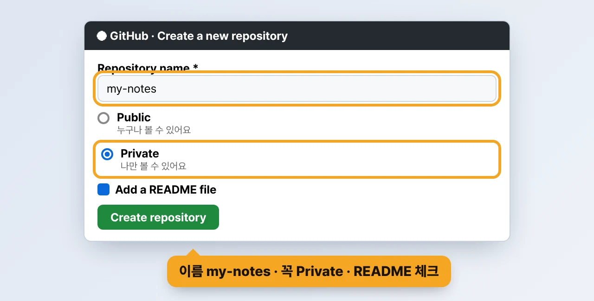
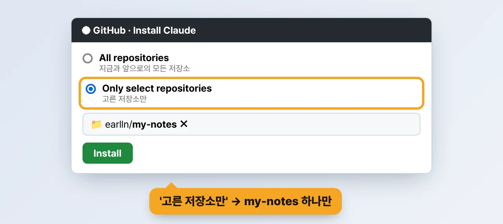
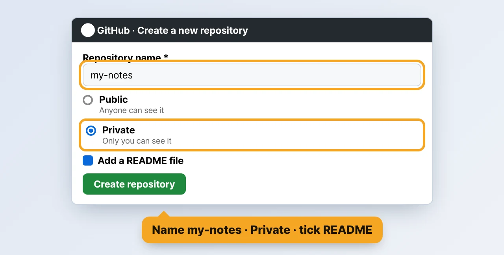
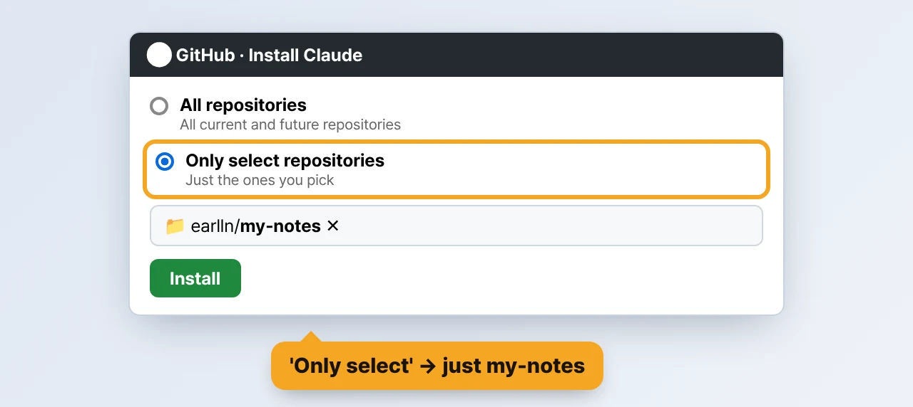

👆 이 내용은 버튼 따라 하는 실습으로도 있어요. 처음이라면 실습으로 직접 해 보고, 이 글은 복습할 때 보세요. 실습 시작하기 →
※ 글 속 그림은 따라 하기 쉽도록 그린 예시입니다. 실제 화면과 모양·글자가 조금 다를 수 있어요.
이게 뭔가요?
휴대폰 1편에서는 켜 둔 내 컴퓨터의 Claude를 휴대폰으로 조종했어요. 컴퓨터가 꺼져 있으면 쓸 수 없었죠.
이번에는 컴퓨터 없이, 인터넷 위의 컴퓨터(클라우드)에서 Claude가 일하게 할 거예요. 그런데 클라우드의 Claude는 내 컴퓨터의 연습 폴더를 볼 수 없어요. 그래서 파일을 인터넷 위의 폴더에 둬야 하는데, 그 폴더가 바로 GitHub 저장소예요. 이번 편은 그 준비만 해요. 실제로 일을 시키는 건 3편에서 해요.
| 낱말 | 뜻 |
|---|---|
| GitHub | 파일을 인터넷에 보관하는 서비스. 원래 개발자용이지만 메모 보관에도 쓸 수 있어요 |
| 저장소 (repository) | GitHub 안의 폴더 하나. 이번에 my-notes라는 메모 폴더를 만들어요 |
| 비공개 (Private) | 나만 볼 수 있는 저장소. 꼭 비공개로 만들어요 |
GitHub 낱말이 처음이라면 GitHub 한눈에 보기를 먼저 읽어 보세요.
0. 먼저 준비할 것
- 이메일 주소
- Claude 유료 요금제(Pro·Max 등). 무료 계정은 클라우드를 쓸 수 없어요.
- 웹 브라우저. 가입·설정이 많아서 컴퓨터 브라우저가 편하지만, 휴대폰 브라우저로도 돼요.
1. GitHub 가입하기
- 브라우저로 github.com에 들어가 Sign up을 누릅니다.
- 이메일, 비밀번호, 사용자 이름(영어, 예: hong-gildong)을 정합니다.
- 이메일로 온 확인 코드를 넣으면 가입 끝. 무료 계정으로 충분해요.
2. 비공개 저장소 my-notes 만들기
- GitHub 화면 오른쪽 위 + → New repository.
- Repository name에 my-notes.
- Private(비공개)를 고릅니다.
- Add a README file에 체크합니다. 첫 파일이 있어야 Claude가 일할 수 있어요.
- Create repository.

3. Claude와 GitHub 연결하기
- 브라우저로 claude.ai/code에 들어가 Claude 계정으로 로그인합니다.
- GitHub 연결(Connect GitHub) 안내를 따라가서, GitHub 화면의 Authorize(허락)를 누릅니다.
- claude.ai/code로 돌아오면 성공이에요. 이 연결은 한 번만 하면 돼요.
4. 비공개 저장소에 Claude 앱 설치하기
비공개 저장소는 Claude GitHub 앱을 설치해야 Claude가 들어갈 수 있어요.
- github.com/apps/claude에 들어가 Install(또는 Configure)을 누릅니다. claude.ai/code가 이 화면으로 안내하기도 해요.
- Only select repositories(고른 저장소만)를 고르고 my-notes 하나만 선택합니다.
- Install을 누릅니다.

claude.ai/code의 저장소 목록에 my-notes가 보이면 준비 끝이에요.
잘 안 될 때
| 이런 경우 | 이렇게 하세요 |
|---|---|
| 확인 코드가 안 와요 | 이메일 스팸함을 보세요. |
| 휴대폰에서 +가 안 보여요 | 왼쪽 위 메뉴(☰) → Repositories → New를 찾아보세요. |
| GitHub 연결 안내가 안 나와요 | Claude 무료 계정인지 확인하세요. 회사(Team·Enterprise) 계정은 관리자가 켜 둬야 해요. 이미 연결됐다면 안내 없이 바로 들어가져요. |
| my-notes가 목록에 없어요 | 앱 설치 때 my-notes를 골랐는지 확인하고, 페이지를 새로고침하세요. |
오늘 배운 것
- 클라우드의 Claude는 GitHub 저장소(인터넷 위의 폴더)에서 일한다.
- 저장소는 꼭 비공개(Private)로, Claude 앱은 고른 저장소만에 설치한다.
- 비밀번호·계좌번호 같은 건 저장소에 넣지 않는다.
준비가 끝났으면 휴대폰 3편: 휴대폰 하나로 Claude Code 쓰기로 넘어가세요.
* The pictures are drawn examples to make the steps easy to follow. Real screens may look slightly different.
What is this?
In Phone 1 you controlled the Claude on your computer (left on) from your phone. It didn't work when the computer was off.
This time Claude will work on a computer on the internet (the cloud), no computer of yours needed. But Claude in the cloud can't see the Practice folder on your computer, so files need to live in a folder on the internet: a GitHub repository. This guide is just the setup. You'll give Claude a job in Phone 3.
| Word | Meaning |
|---|---|
| GitHub | A service that keeps files on the internet. Made for developers, but fine for notes too |
| Repository | One folder inside GitHub. You'll make a notes folder called my-notes |
| Private | A repository only you can see. Always make it private |
New to GitHub words? Read GitHub at a glance first.
0. What you need
- An email address
- A paid Claude plan (Pro, Max, etc.). Free accounts can't use the cloud.
- A web browser. There's a lot of signing up, so a computer browser is easier, but a phone browser works.
1. Join GitHub
- Go to github.com in a browser and tap Sign up.
- Choose an email, a password and a username (e.g. jane-kim).
- Enter the code emailed to you, and you're in. A free account is enough.
2. Make a private repository called my-notes
- On GitHub, tap + at the top right → New repository.
- Repository name: my-notes.
- Choose Private.
- Tick Add a README file. Claude needs a first file to work with.
- Create repository.

3. Connect Claude to GitHub
- Go to claude.ai/code in a browser and sign in with your Claude account.
- Follow the Connect GitHub prompt and tap Authorize on the GitHub screen.
- If you land back on claude.ai/code, it worked. You only do this once.
4. Install the Claude app on the private repository
For a private repository, the Claude GitHub app must be installed before Claude can get in.
- Go to github.com/apps/claude and tap Install (or Configure). claude.ai/code may also lead you here.
- Choose Only select repositories and pick just my-notes.
- Tap Install.

When my-notes appears in the repository list on claude.ai/code, you're ready.
If it doesn't work
| If this happens | Do this |
|---|---|
| The code never arrives | Check your spam folder. |
| No + on your phone | Try the menu (☰) at the top left → Repositories → New. |
| No Connect GitHub prompt | Check you're not on a free Claude account. Work (Team/Enterprise) accounts need an admin to turn it on. If it's already connected, you go straight in. |
| my-notes isn't in the list | Check you picked my-notes when installing the app, then refresh the page. |
What you learned today
- Claude in the cloud works in a GitHub repository (a folder on the internet).
- Make repositories Private, and install the Claude app on selected repositories only.
- Never put passwords or account numbers in the repository.
Once you're set up, move on to Phone 3: Use Claude Code from your phone alone.